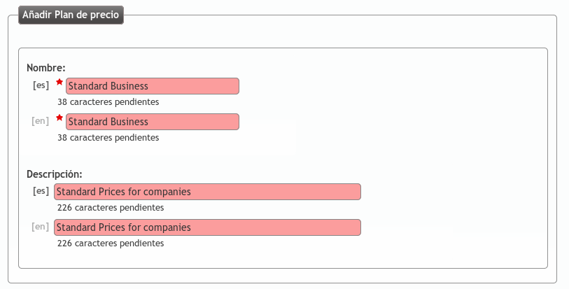
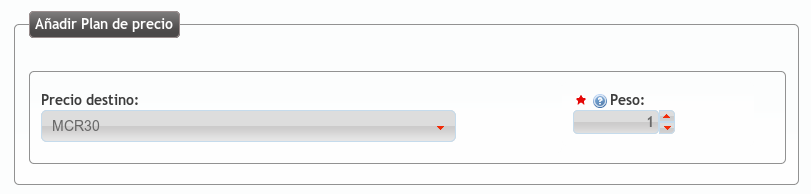
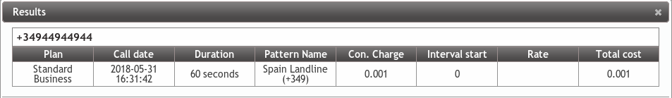
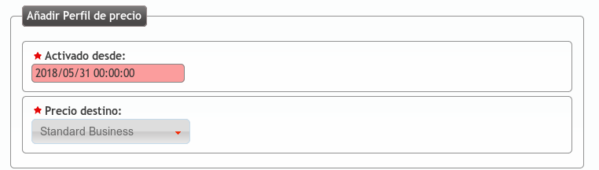

Planes de precio¶
Creando un plan de precios¶
Destination rates are grouped using Rating plans. This offers the possibility to have base pricing data and customize some destination with different prices.
Crear un plan de precios:
Y ahora podemos añadir nuestro precio destino:
La métrica permite asignar más de un precio destino al plan de precios, aunque exista el mismo destino en más de uno de ellos.
Atención
Si una llamada puede ser tarificada empleando más de un Precio destino, se empleará el que tenga menor métrica.
Truco
Esto permite tener un Precio destino genera y especificar un precio para un destino concreto en otro precio destino con una métrica menor (por ejemplo, llamadas gratuitas a móviles).
Comprobando los planes de precio
Para comprobar la configuración puede Simular una llamada desde el listado de planes de precio.
We introduce the destination number in E.164 format, and we can check that it matches the rating plan we have just created:
Asignar planes de precio a la compañía¶
Un plan de precios puede estar vinculado a multiples compañías.
La sección Configuración de Marca > PBXs Virtuales seleccionaremos la compañía DemoCompany:

El plan de precios tiene una fecha de activación y solo uno puede estar activo para cada compañía.
Simular una llamada para una compañía
In este listado también es posible simular una llamada para una compañía, tal y como hicimos anteriormente en el listado de planes de precio y comprobar el precio que tendrá. De esta manera, podemos confirmar que le configuración es correcta.